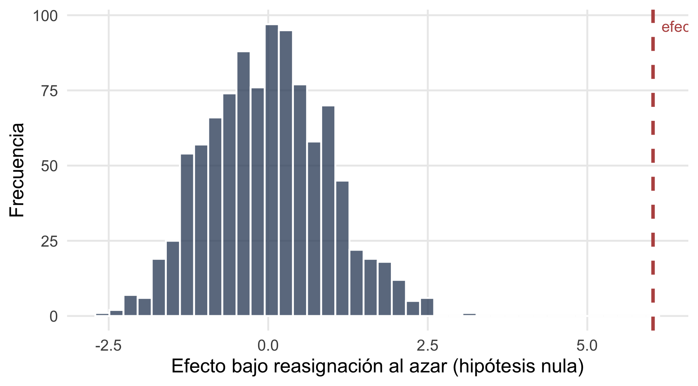

# instala cada paquete solo si te falta, y después lo carga
paquetes <- c("tidyverse", "estimatr", "fabricatr", "randomizr",
"DeclareDesign", "DesignLibrary", "ri2")
for (pkg in paquetes) {
if (!require(pkg, character.only = TRUE)) {
install.packages(pkg, dependencies = TRUE)
library(pkg, character.only = TRUE)
}
}Referencia R: experimentos
Parte 2 · diferencia de medias, balance, ajuste de covariables y diseño
Esta página reúne, con código que podés correr y copiar, todas las funciones de R que aparecen en el bloque de experimentos (diapositivas). La idea es que después del taller tengas un lugar donde volver: cada sección explica en dos o tres frases qué hace el comando, muestra un bloque ejecutable con su salida real, y cierra con una nota sobre cuándo conviene usarlo y qué mirar.
Todos los ejemplos trabajan sobre los mismos datos simulados del experimento del dengue. Como la semilla está fija (set.seed(3043)), los números que ves acá son idénticos a los de las diapositivas y a los del archivo dengue_incentivos.csv. Si corrés el código en tu computadora vas a obtener exactamente lo mismo.
1 Paquetes y datos
Cargá los paquetes del bloque. El bucle recorre la lista paquetes e instala cada uno solo si te falta, así el código corre igual en cualquier máquina. Después generá los datos con fabricatr y randomizr, la misma “cocina” que usa DeclareDesign por dentro.
fabricate() arma una tabla variable por variable; complete_ra() sortea exactamente 200 agentes al tratamiento (un sorteo simple, “completo”). El resto de las variables son rasgos previos de cada agente de salud.
set.seed(3043)
datos <- fabricate(
N = 400,
edad = round(rnorm(N, 38, 7.5)),
mujer = rbinom(N, 1, 0.7),
experiencia = round(rnorm(N, 7, 2.6)),
zona = sample(c("urbana", "rural"), N, replace = TRUE),
visitas_previas = round(rnorm(N, 35, 6)),
tratamiento = complete_ra(N, m = 200),
visitas = round(20 + 4.5 * tratamiento
+ 3 * tratamiento * (zona == "urbana")
+ 0.4 * visitas_previas + rnorm(N, 0, 9)),
indice_larvario = round(pmax(0, 12 - 2.8 * tratamiento + rnorm(N, 0, 4)), 1)
)
head(datos) ID edad mujer experiencia zona visitas_previas tratamiento visitas
1 001 24 0 3 urbana 27 1 51
2 002 38 0 6 rural 39 0 36
3 003 30 1 8 urbana 34 0 42
4 004 32 1 5 urbana 30 1 32
5 005 32 1 8 urbana 28 0 48
6 006 26 1 3 rural 38 1 47
indice_larvario
1 5.4
2 11.0
3 11.6
4 9.2
5 7.8
6 13.0Las variables clave: tratamiento (1 si el agente recibió el incentivo económico), visitas (criaderos tratados, el resultado principal) e indice_larvario (larvas por casa, un segundo resultado). Las demás (edad, experiencia, zona, visitas_previas) se midieron antes del sorteo.
NotaCuándo usarlo
Simulá tus datos con fabricatr cuando quieras probar tu código de análisis antes de tener datos reales, o para armar un ejemplo reproducible. Con la semilla fija, cualquiera reproduce tu tabla exactamente.
2 Diferencia de medias
Como el incentivo se sorteó, el efecto causal promedio es simplemente la media de visitas en el grupo tratado menos la del grupo control. difference_in_means() de estimatr calcula esa resta con su error estándar y su intervalo de confianza.
difference_in_means(visitas ~ tratamiento, data = datos)Design: Standard
Estimate Std. Error t value Pr(>|t|) CI Lower CI Upper DF
tratamiento 6.03 0.9261048 6.511142 2.2883e-10 4.209244 7.850756 391.8158El estimado (≈ 6,03) son las visitas de más que produjo el incentivo. El intervalo de confianza no cruza el cero, así que el efecto es distinto de cero con holgura.
NotaCuándo usarlo
Es la forma más directa de estimar el efecto en un experimento aleatorizado simple. Mirá el punto estimado y si el intervalo de confianza incluye el cero. Para diseños con bloques o conglomerados, esta misma función acepta los argumentos blocks = y clusters = (lo vemos más abajo).
3 La regresión da lo mismo
La misma diferencia sale de una regresión de visitas sobre tratamiento. lm_robust() ajusta esa regresión con errores estándar robustos (corrigen la heterocedasticidad sin costo). El coeficiente de tratamiento coincide con la diferencia de medias hasta el último decimal.
ajuste_visitas <- lm_robust(visitas ~ tratamiento, data = datos)
summary(ajuste_visitas)
Call:
lm_robust(formula = visitas ~ tratamiento, data = datos)
Standard error type: HC2
Coefficients:
Estimate Std. Error t value Pr(>|t|) CI Lower CI Upper DF
(Intercept) 33.45 0.6123 54.618 5.263e-187 32.241 34.649 398
tratamiento 6.03 0.9261 6.511 2.251e-10 4.209 7.851 398
Multiple R-squared: 0.09627 , Adjusted R-squared: 0.094
F-statistic: 42.39 on 1 and 398 DF, p-value: 2.251e-10El coeficiente de tratamiento es idéntico al de difference_in_means(). ¿Para qué la regresión, entonces? Porque escala: le sumás controles, interacciones o efectos fijos sin cambiar de herramienta. El test \(t\) del coeficiente es un caso particular de la regresión, no una técnica aparte.
NotaCuándo usarlo
Usá lm_robust() como caballo de batalla para estimar efectos en experimentos. Fijate en el coeficiente de tratamiento, su error estándar y su valor \(p\). Los errores robustos (se_type = "HC2" por defecto) son la opción segura.
4 Controles: precisión, no sesgo
En un experimento no controlás para quitar sesgo, porque el sorteo ya lo quitó. Pero sumar covariables medidas antes del tratamiento puede achicar el error estándar y darte un estimado más preciso.
ajuste_ctrl <- lm_robust(visitas ~ tratamiento + edad + visitas_previas,
data = datos)
summary(ajuste_ctrl)
Call:
lm_robust(formula = visitas ~ tratamiento + edad + visitas_previas,
data = datos)
Standard error type: HC2
Coefficients:
Estimate Std. Error t value Pr(>|t|) CI Lower CI Upper DF
(Intercept) 20.31588 3.58382 5.669 2.775e-08 13.2702 27.3616 396
tratamiento 5.80070 0.88953 6.521 2.132e-10 4.0519 7.5495 396
edad -0.02701 0.06524 -0.414 6.791e-01 -0.1553 0.1012 396
visitas_previas 0.41151 0.07455 5.520 6.154e-08 0.2649 0.5581 396
Multiple R-squared: 0.1678 , Adjusted R-squared: 0.1615
F-statistic: 24.19 on 3 and 396 DF, p-value: 2.158e-14El coeficiente de tratamiento casi no se mueve, pero su error estándar suele bajar. Cuidado con un detalle importante: los coeficientes de edad o visitas_previas no tienen lectura causal. Esas variables no se sortearon, así que sus coeficientes son asociaciones, no efectos.
NotaCuándo usarlo
Agregá covariables pre-tratamiento cuando expliquen bien el resultado y quieras ganar precisión. Compará el error estándar de tratamiento con y sin controles. Nunca controles por variables medidas después del tratamiento: podrían estar afectadas por él y sesgar el estimado.
5 Ajuste a la Lin
Meter covariables “a lo bruto” (sumándolas sin más) puede colar un sesgo chico en muestras finitas; es la crítica de Freedman. La receta de Lin (2013) lo arregla: centra cada covariable en su media y la interactúa con el tratamiento. lm_lin() hace todo eso por vos; vos solo pasás las covariables en covariates = ~ ....
ajuste_lin <- lm_lin(visitas ~ tratamiento,
covariates = ~ edad + visitas_previas,
data = datos)
summary(ajuste_lin)
Call:
lm_lin(formula = visitas ~ tratamiento, covariates = ~edad +
visitas_previas, data = datos)
Standard error type: HC2
Coefficients:
Estimate Std. Error t value Pr(>|t|) CI Lower
(Intercept) 33.5887 0.57750 58.1626 1.758e-195 32.45330
tratamiento 5.8032 0.88540 6.5544 1.753e-10 4.06256
edad_c 0.1172 0.08488 1.3813 1.680e-01 -0.04963
visitas_previas_c 0.4640 0.09452 4.9090 1.343e-06 0.27815
tratamiento:edad_c -0.2775 0.12836 -2.1619 3.123e-02 -0.52984
tratamiento:visitas_previas_c -0.1176 0.14778 -0.7959 4.266e-01 -0.40815
CI Upper DF
(Intercept) 34.72402 394
tratamiento 7.54394 394
edad_c 0.28413 394
visitas_previas_c 0.64979 394
tratamiento:edad_c -0.02514 394
tratamiento:visitas_previas_c 0.17291 394
Multiple R-squared: 0.1795 , Adjusted R-squared: 0.1691
F-statistic: 16.13 on 5 and 394 DF, p-value: 1.781e-14El efecto estimado (≈ 5,80) queda con un error estándar de ≈ 0,885, menor que el ≈ 0,926 de la regresión sin ajustar. Mismo efecto, más precisión, sin el riesgo de sesgo de la regresión ingenua.
NotaCuándo usarlo
Es el ajuste de covariables recomendado para experimentos. Usalo en lugar de sumar controles a mano cuando quieras precisión con garantías teóricas. Mirá que el error estándar sea igual o menor que el de lm_robust() sin covariables.
6 Efectos heterogéneos
¿El incentivo rinde igual en la zona urbana que en la rural? Una interacción lo responde. El operador * en la fórmula pide los dos efectos principales más su producto: tratamiento * zona.
ajuste_hetero <- lm_robust(visitas ~ tratamiento * zona, data = datos)
summary(ajuste_hetero)
Call:
lm_robust(formula = visitas ~ tratamiento * zona, data = datos)
Standard error type: HC2
Coefficients:
Estimate Std. Error t value Pr(>|t|) CI Lower CI Upper
(Intercept) 34.089 0.8918 38.226 5.793e-135 32.336 35.842
tratamiento 4.450 1.2980 3.429 6.703e-04 1.898 7.002
zonaurbana -1.301 1.2234 -1.064 2.882e-01 -3.706 1.104
tratamiento:zonaurbana 2.987 1.8379 1.625 1.049e-01 -0.626 6.600
DF
(Intercept) 396
tratamiento 396
zonaurbana 396
tratamiento:zonaurbana 396
Multiple R-squared: 0.1022 , Adjusted R-squared: 0.09542
F-statistic: 14.85 on 3 and 396 DF, p-value: 3.514e-09Como rural es la categoría de referencia (va primero en el alfabeto), el coeficiente de tratamiento (≈ 4,45) es el efecto del incentivo en la zona rural. El término tratamiento:zonaurbana (≈ +2,99) dice cuánto más rinde en la zona urbana. El efecto urbano total es la suma de los dos, ≈ 7,4.
NotaCuándo usarlo
Buscá efectos heterogéneos con una interacción cuando tengas una hipótesis sobre para quién funciona el programa. Leé el término de interacción como exploración, no como prueba, salvo que lo hayas pre-registrado: los subgrupos que salen “significativos” por azar son una fuente clásica de resultados que no se replican.
7 Tabla de balance
Un buen sorteo deja los grupos parejos en las variables previas. Para chequearlo, corré una regresión por covariable (la covariable explicada por tratamiento) y juntá las diferencias con su valor \(p\). Sin bucles: tres modelos explícitos que van a una data.frame.
b_edad <- lm_robust(edad ~ tratamiento, data = datos)
b_exp <- lm_robust(experiencia ~ tratamiento, data = datos)
b_previas <- lm_robust(visitas_previas ~ tratamiento, data = datos)
balance <- data.frame(
variable = c("edad", "experiencia", "visitas_previas"),
dif = round(c(b_edad$coefficients["tratamiento"],
b_exp$coefficients["tratamiento"],
b_previas$coefficients["tratamiento"]), 2),
p_valor = round(c(b_edad$p.value["tratamiento"],
b_exp$p.value["tratamiento"],
b_previas$p.value["tratamiento"]), 3)
)
balance variable dif p_valor
1 edad 0.19 0.787
2 experiencia 0.59 0.021
3 visitas_previas 0.57 0.366Casi ninguna diferencia debería ser significativa, y así es: edad y visitas_previas tienen valores \(p\) altos. Pero experiencia sale significativa (\(p ≈ 0{,}021\)) aunque el tratamiento se sorteó.
NotaQué mirar (y una advertencia)
Con muchas covariables, alrededor del 5% van a salir significativas solo por azar, aun con un sorteo perfecto. Un valor \(p\) chico en una prueba de balance no prueba que la aleatorización falló; es lo esperable en cada muestra concreta. Y el balance solo cubre lo que medís: el sorteo también equilibra, en expectativa, las variables que no observaste.
8 Errores estándar agrupados
Si sorteás por conglomerados (por ejemplo, sorteás barrios enteros en vez de personas), las observaciones dentro de un mismo conglomerado se parecen entre sí. Ignorarlo produce errores estándar demasiado chicos y falsos positivos. lm_robust() los corrige con el argumento clusters =.
# demo de sintaxis: si "zona" fuese la unidad de sorteo, agruparías por ella
lm_robust(visitas ~ tratamiento, clusters = zona, data = datos) Estimate Std. Error t value Pr(>|t|) CI Lower CI Upper
(Intercept) 33.445 0.6505825 51.407775 0.01238216 25.17857 41.71143
tratamiento 6.030 1.4877553 4.053086 0.15364776 -12.79330 24.85330
DF
(Intercept) 1.000000
tratamiento 1.001808difference_in_means() acepta la misma lógica, más blocks = para diseños por bloques. Ojo con un detalle: cuando pasás clusters =, esta función espera que el tratamiento sea constante dentro de cada conglomerado, porque asume que sorteaste el conglomerado entero. Nuestros datos se sortearon a nivel individual, así que este bloque queda como demostración de sintaxis:
# diseño por conglomerados: se sortea el conglomerado entero
difference_in_means(visitas ~ tratamiento, clusters = conglomerado, data = tus_datos)
# diseño por bloques: se sortea dentro de cada bloque
difference_in_means(visitas ~ tratamiento, blocks = bloque, data = tus_datos)En un diseño por conglomerados real tendrías decenas o cientos de conglomerados, cada uno tratado o control por completo.
NotaCuándo usarlo
Esto conecta con la idea de SUTVA del bloque: cuando el tratamiento de una unidad puede afectar a sus vecinas, una salida es “sortear por conglomerados” y separar los brazos. Regla práctica: si aleatorizaste por grupo, tenés que agrupar los errores por ese mismo grupo, o van a salir más chicos de lo que corresponde.
9 Inferencia por aleatorización
¿El efecto es real o pura suerte del sorteo? La inferencia por aleatorización lo contesta sin apoyarse en la normalidad de muestras grandes. La idea: bajo la hipótesis nula de “efecto cero para todos”, reasignás el tratamiento al azar miles de veces y mirás qué tan raro es el efecto que observaste dentro de esa nube. El paquete ri2 de Alexander Coppock lo automatiza con conduct_ri().
declaracion <- declare_ra(N = 400, m = 200)
ri <- conduct_ri(
visitas ~ tratamiento,
declaration = declaracion,
assignment = "tratamiento",
sharp_hypothesis = 0,
data = datos,
sims = 1000
)
summary(ri) term estimate two_tailed_p_value
1 tratamiento 6.03 0El valor \(p\) por aleatorización sale prácticamente cero: en 1000 reasignaciones al azar, ninguna produjo un efecto tan grande como el observado. Podés ver la distribución de permutación con el efecto observado marcado; esto reproduce la Figura 4 de Freire, Galdino y Mignozzetti (2020).
library(ggplot2)
ggplot(ri$sims_df, aes(x = est_sim)) +
geom_histogram(bins = 40, fill = azul, alpha = 0.75, color = "white") +
geom_vline(xintercept = ri$sims_df$est_obs[1],
color = rojo, linewidth = 1.1, linetype = "dashed") +
annotate("text", x = ri$sims_df$est_obs[1], y = Inf,
label = " efecto observado (6,03)", color = rojo,
hjust = 0, vjust = 2, size = 3.6) +
labs(x = "Efecto bajo reasignación al azar (hipótesis nula)",
y = "Frecuencia") +
theme_minimal(base_size = 13) +
theme(panel.grid.minor = element_blank())
NotaCuándo usarlo
Es la prueba a la que recurrir con muestras chicas, diseños complejos (bloques, conglomerados) o cuando no querés confiar en la aproximación normal. Mirá dónde cae la línea del efecto observado: si queda lejos de la nube, el nulo es poco creíble; si cae dentro, no podés descartar que el efecto sea cero.
10 Múltiples resultados
Cuando probás varios resultados a la vez (acá visitas e indice_larvario), la chance de encontrar al menos un falso positivo crece. Es el problema de las comparaciones múltiples. Una salida sencilla es ajustar los valores \(p\) con p.adjust(); otra es combinar los resultados en un índice estandarizado y probar ese índice una sola vez.
o_visitas <- lm_robust(visitas ~ tratamiento, data = datos)
o_larvas <- lm_robust(indice_larvario ~ tratamiento, data = datos)
p_crudos <- c(
visitas = o_visitas$p.value["tratamiento"],
indice_larvario = o_larvas$p.value["tratamiento"]
)
# Benjamini-Hochberg: controla la tasa de falsos descubrimientos
p.adjust(p_crudos, method = "BH") visitas.tratamiento indice_larvario.tratamiento
2.251313e-10 2.327320e-12 Acá los dos efectos son enormes, así que siguen dando cero tras el ajuste. La diferencia se nota cuando los efectos son chicos y estás cerca del umbral. Como alternativa, un índice estandarizado promedia los resultados en la misma escala:
indice <- scale(datos$visitas) + scale(-datos$indice_larvario) # más visitas, menos larvas = mejor
lm_robust(indice ~ tratamiento, data = datos) Estimate Std. Error t value Pr(>|t|) CI Lower CI Upper
(Intercept) -0.655 0.09376286 -6.985708 1.197608e-11 -0.8393324 -0.4706676
tratamiento 1.310 0.13530626 9.681739 4.777422e-20 1.0439957 1.5760043
DF
(Intercept) 398
tratamiento 398
NotaCuándo usarlo
Ajustá los valores \(p\) (o armá un índice) siempre que declares varios resultados. method = "BH" controla la proporción de falsos descubrimientos y es menos conservador que Bonferroni. Decidí de antemano cuál es tu resultado principal, para no elegir a posteriori el que salió significativo.
11 Declarar el diseño con DeclareDesign
Antes de gastar un peso en el campo, podés escribir tu diseño como código y simularlo. DeclareDesign arma el diseño en piezas (el esquema MIDA: modelo, pregunta, asignación, estimación) que se suman con +, como las capas de ggplot.
diseno <-
declare_model(
N = 400,
U = rnorm(N),
potential_outcomes(Y ~ 0.3 * Z + U) # resultados potenciales
) +
declare_inquiry(ATE = mean(Y_Z_1 - Y_Z_0)) + # la pregunta: el ATE
declare_assignment(Z = complete_ra(N, m = 200)) + # el sorteo
declare_measurement(Y = reveal_outcomes(Y ~ Z)) + # qué se observa
declare_estimator(Y ~ Z, .method = lm_robust, inquiry = "ATE")
diseno
Research design declaration summary
Step 1 (model): declare_model(N = 400, U = rnorm(N), potential_outcomes(Y ~ 0.3 * Z + U))
Step 2 (inquiry): declare_inquiry(ATE = mean(Y_Z_1 - Y_Z_0)) -------------------
Step 3 (assignment): declare_assignment(Z = complete_ra(N, m = 200)) -----------
Step 4 (measurement): declare_measurement(Y = reveal_outcomes(Y ~ Z)) ----------
Step 5 (estimator): declare_estimator(Y ~ Z, .method = lm_robust, inquiry = "ATE")
Run of the design:
inquiry estimand estimator term estimate std.error statistic p.value conf.low
ATE 0.3 estimator Z 0.178 0.0963 1.84 0.066 -0.0118
conf.high df outcome
0.367 398 Y
No modifiable parameters saved in design diagnose_design() simula el diseño muchas veces y devuelve sus propiedades: sesgo, poder (la chance de detectar el efecto), cobertura del intervalo de confianza. Todo esto antes de recoger un solo dato real.
set.seed(3043)
diagnostico <- diagnose_design(diseno, sims = 500, bootstrap_sims = 100)
diagnostico
Research design diagnosis based on 500 simulations. Diagnosis completed in 1 secs. Diagnosand estimates with bootstrapped standard errors in parentheses (100 replicates).
Design Inquiry Estimator Outcome Term N Sims Mean Estimand Mean Estimate
diseno ATE estimator Y Z 500 0.30 0.30
(0.00) (0.00)
Bias SD Estimate RMSE Power Coverage
0.00 0.11 0.10 0.84 0.94
(0.00) (0.00) (0.00) (0.02) (0.01)Con N = 400 y un efecto de 0,3 desvíos, el poder ronda 0,84: detectaríamos ese efecto en el 84% de los experimentos. Si el poder saliera bajo, sabrías que necesitás más muestra antes de salir al campo. La referencia completa es Blair, Coppock y Humphreys (2023), gratis online.
NotaCuándo usarlo
Declará y diagnosticá tu diseño en la etapa de planificación, para responder “¿con esta muestra, detecto un efecto de este tamaño?”. Mirá el poder (querés ≥ 0,8), el sesgo (cerca de cero) y la cobertura (cerca de 0,95). Subí N o el tamaño de efecto asumido y volvé a diagnosticar para ver cómo cambian.
12 Diseños listos: DesignLibrary
No hace falta declarar todo a mano. DesignLibrary trae diseñadores ya codificados: les pasás unos pocos parámetros y sale un diseño completo, listo para diagnose_design().
d1 <- two_arm_designer(N = 200, ate = 0.3) # dos brazos
d2 <- multi_arm_designer(N = 300, m_arms = 3, # varios brazos (como el dengue)
outcome_means = c(0, 0.3, 0.6))
d3 <- block_cluster_two_arm_designer( # bloques y conglomerados
N_blocks = 5, N_clusters_in_block = 10, N_i_in_cluster = 5)[1] "The implied ICC in (control) is 0.667"
[1] "The implied ICC in (control) conditional on block is 0.5"d4 <- regression_discontinuity_designer(N = 1000, # el RDD de la tarde
cutoff = 0.5)
# cada uno es un diseño completo, listo para diagnosticar
diagnose_design(d1, sims = 500, bootstrap_sims = 100)
Research design diagnosis based on 500 simulations. Diagnosis completed in 1 secs. Diagnosand estimates with bootstrapped standard errors in parentheses (100 replicates).
Design Inquiry Estimator Outcome Term N Sims Mean Estimand Mean Estimate
d1 ATE estimator Y Z 500 0.30 0.30
(0.00) (0.01)
Bias SD Estimate RMSE Power Coverage
0.00 0.14 0.14 0.56 0.96
(0.01) (0.00) (0.00) (0.02) (0.01)
NotaCuándo usarlo
Empezá por un diseñador de la librería cuando tu diseño encaje en un molde común (dos brazos, varios brazos, bloques y conglomerados, discontinuidad). Ajustás los parámetros, diagnosticás, y solo bajás a declarar a mano si tu diseño tiene algo que la librería no cubre. La lista completa está en declaredesign.org/r/designlibrary.
13 Para seguir
TipEnlaces y lecturas
Documentación de los paquetes
estimatr:lm_robust,lm_lin,difference_in_means.DeclareDesign: declarar, diagnosticar y simular diseños.fabricatryrandomizr: simular datos y sortear.ri2: inferencia por aleatorización.
Para leer
- Blair, Coppock y Humphreys (2023), Research Design in the Social Sciences: el libro de
DeclareDesign, gratis online. - Lin (2013): el ajuste de covariables que implementa
lm_lin().
Nuestros casos del bloque
- Freire y Mignozzetti (2022): incentivos económicos y control del dengue.
- Freire, Galdino y Mignozzetti (2020): el resultado nulo creíble y la inferencia por aleatorización de la Figura 4.